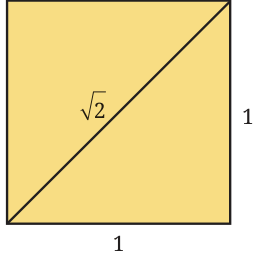
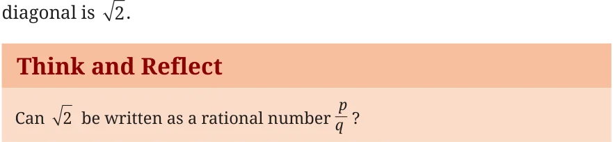
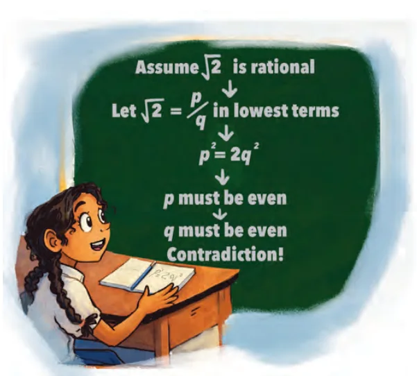
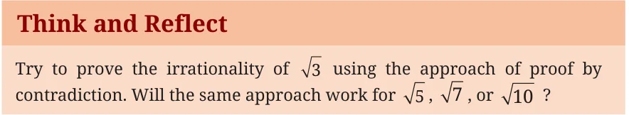
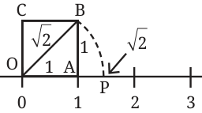

For centuries, mathematicians believed that every measurable length in the universe could be represented as a ratio of two integers. However, when Baudhāyana composed his Śhulbasūtra (a manual for constructing complex geometric fire altars) in around 800 BCE, he quickly encountered lengths that defied fractions. The ancient Greeks encountered the same crisis a few centuries later. Fig. 3.10 Consider a square where each side is exactly 1 unit long. By the Baudhāyana - Pythagoras Theorem, the length of the

diagonal d is given by \(1 + 1 = d\) , so \(d = 2\). Therefore, the length of the

As you learned in Grade 8, the answer is a resounding NO! We will soon again see why! Numbers on the number line that cannot be expressed as a ratio of integers are called Irrational Numbers.
3.5.1 The Proof of Irrationality of
The first proof of the irrationality of 2 is due to a mathematician named Hippasus who was a member of the Pythagorean school (c. 400 BCE). To explain why 2 is irrational, he employed a brilliant
technique called Proof by Contradiction. Namely, we assume the opposite of what we want to prove, and show that this assumption leads to a logical disaster. Proof: We shall explain the proof in steps. Step 1: Assumption: Assume 2 is a rational number. Therefore, it can be written as a fraction \(\frac{p}{q}\) , \(q \ne 0\) in its simplest form. (This means p and q are integers that share no common factors other than 1, that is, they are co-prime.)
\(2 = \frac{p}{q}\)
Step 2: Square both sides of the equation:
\(2 = \frac{p2}{q2}\)
Step 3: Multiply both sides by q :
\(2q^{2} = p^{2}\)
Step 4: Deduction for p:
Because p is equal to 2 times some integer, p must be an even number. If the square of a number is even, the number itself must be even. Therefore, p is an even integer. Let us say \(p = 2k\) (where k is an integer). Step 5: Substitute \(p = 2k\) back into our equation from Step 3:
\(2q = (2k)\)
\(2q = 4k\)
Step 6: Divide both sides by 2:
\(q = 2k\)
Step 7: Deduction for q: Now we see that q is equal to 2 times some
integer k . This means q is even, and therefore, q must also be an even integer. Step 8: The Contradiction: We deduced that p is even and q is even. This means they both share a common factor of 2. However, in Step 1, we stated that \(\frac{p}{q}\) was in simplest form, sharing no common factors!
Because our logical steps are flawless, our initial assumption must be wrong. Therefore,


3.5.2 Construction of Length
Think and Reflect
We have seen how to obtain a line whose length is a rational number. How do we obtain lines whose lengths are irrational?
For example, to construct a line segment of length 2 and mark its position on the number line, we may proceed as follows. Step 1: On the number line (see Fig. 3.11), we measure \(OA = 1\) unit and draw a perpendicular on OA through A.
Step 2: On this perpendicular line we mark the point B such that \(AB = 1\) unit and join the origin to B. Clearly, \(OB = 2\) units. Step 3: With O as centre and OB as radius, with a compass we draw an arc which intersects the number line at P. Clearly, \(OP = 2\) units. Hence, P represents the irrational number 2.

\(- 3 - 2 - 1\) Fig. 3.11: Constructing irrational lengths and locating them on the number line
Think and Reflect
Try to extend this method for constructing line segments of lengths 3 and 5 using a ruler and a compass. Generalise this method to construct a line segment of any length of the form n , where n is a positive integer.
3.5.3 The Story of Pi ( \(\pi\) ) and Madhava’s Infinite Series
Another famous irrational number is \(\pi\) , the ratio of a circle’s circumference to its diameter. For centuries, mathematicians sought better and better fractional approximations for \(\pi\) . Āryabhaṭa (499 CE) gave the highly accurate approximation \(\frac{3927}{1250} = 3.1416\), but stated that this was only an asanna (approximation), and indicated that an exact fraction could likely not be found. However, because \(\pi\) is irrational (as was formally proven by Lambert in 1761), no single fraction (or finitely many fractions) can ever provide a perfect formula for \(\pi\) . An exact formula for \(\pi\) was first unlocked in the 14th century by Mādhava of Sangamagrama, who launched the Kerala School of Mathematics. Mādhava realised that to express an irrational number, you cannot use a single fraction; you must use an infinite sum. He discovered the profound infinite series:
\(\pi = 4 \times\) 1 \(- \frac{111}{357} + -\) + .
We know what it means to add 2, 100, or even a lakh terms. What does it mean to add an infinite number of terms? It means finding the
value that we get “closer” and “closer” to as we add more and more terms of the infinite sum, starting from the first term. You will learn more about infinite series in higher grades. Thus, the number line is not only filled with rational numbers but also contains irrational numbers. We have seen how to mark some irrationals, and will simply conceive the rest of the irrationals to lie on the line.
\(- 5 - 4 - 3 - 2 - \frac{3}{2} - 1 - \frac{1}{3} \frac{51}{6} \frac{3}{2}\)